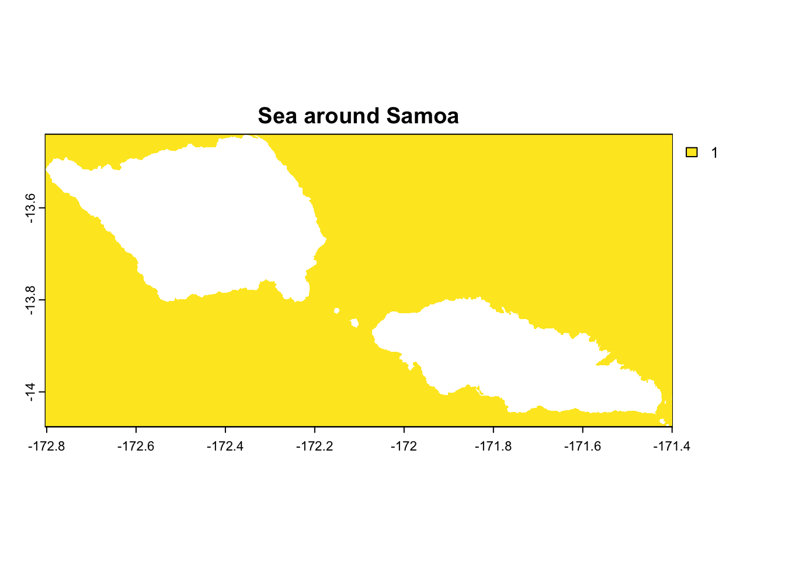
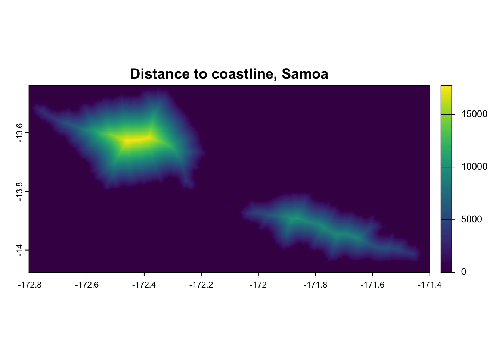
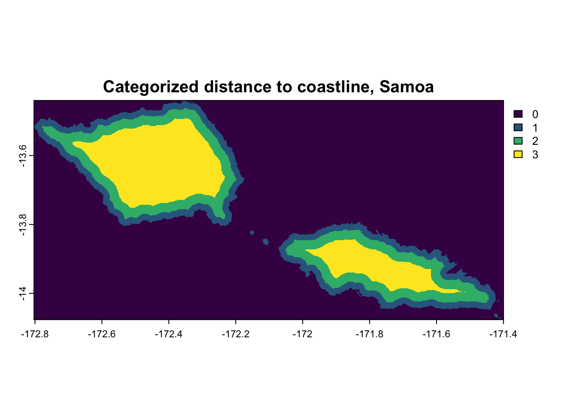
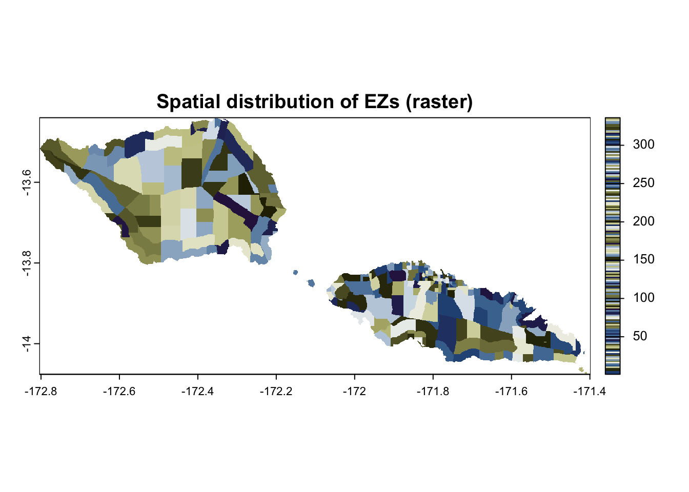
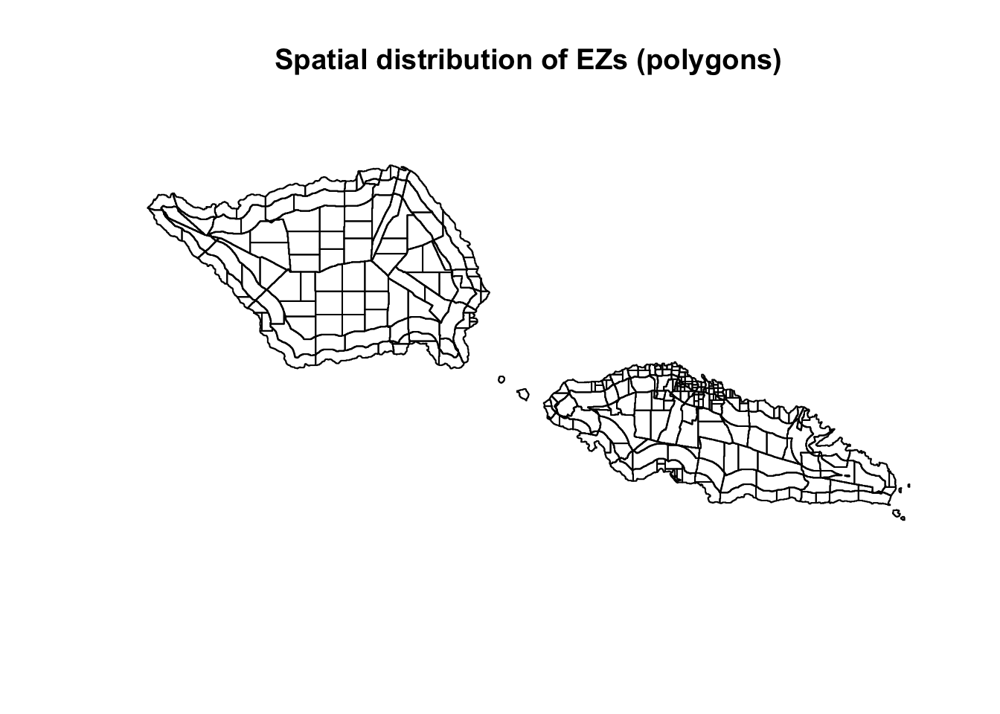
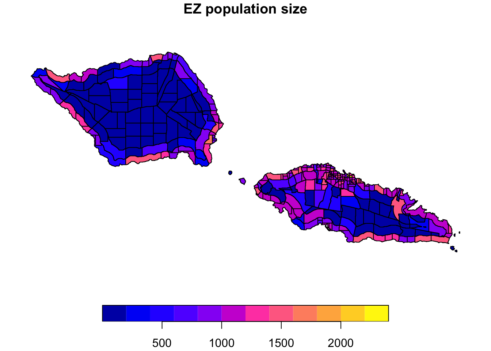
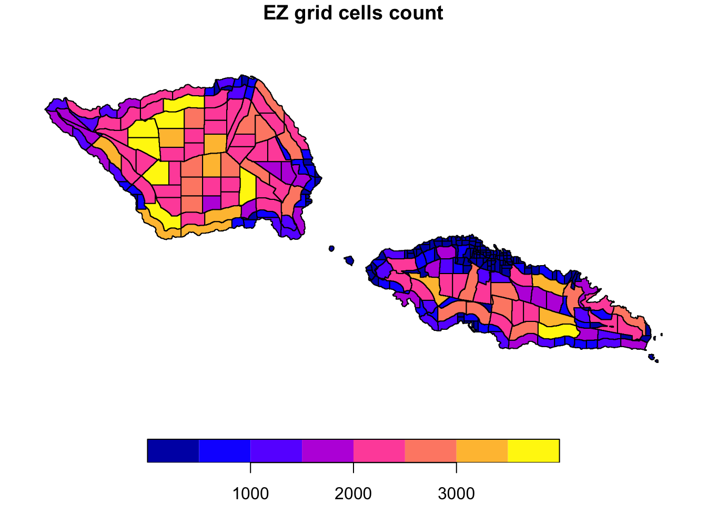
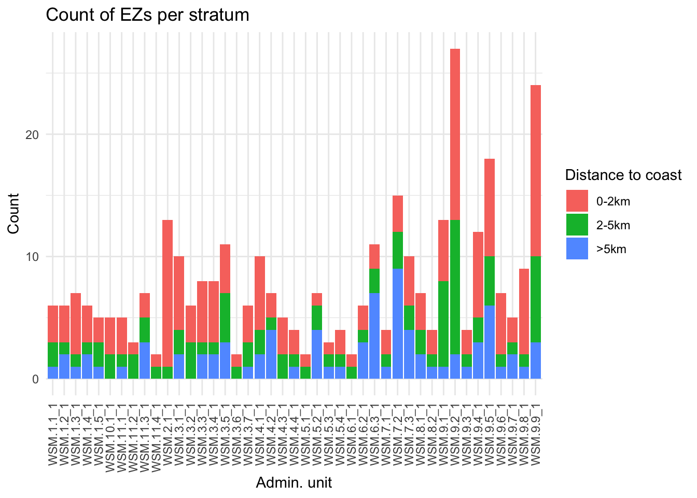

# list of required packages
required_packages <- c("sf", "terra", "parallel", "data.table", "ggplot2", "scico", "patchwork")
# install missing packages
install.packages(setdiff(required_packages, installed.packages()[, "Package"]))
# load packages
library(sf)
library(terra)
library(data.table)
library(parallel)
library(ggplot2)
library(scico)
library(patchwork)
library(gridEZ2)Tutorial 3: alternative sampling frame stratification example
Suggested citation: Dooley, C.A. (2025). gridEZ Tutorial 3 version 1.0
Tutorial Aim
The aim of this tutorial is to generate and evaluate a bespoke gridded sampling frame for Samoa stratified by administrative units and distance to coast. This tutorial provides guidance on how to create strata that may be very specific to a survey instead of using widely available data such as settlement type. We use distance to coast for this Samoa example but this could just as easily be distance to any points of interest, e.g. health care facilities or railway stations, depending on the aims of the survey for which the sampling frame is being constructed. The gridded sampling frame will contain gridded Enumeration Zones (EZs) that can be used for sampling survey units.
Packages
Load all the R packages necessary to complete this tutorial. If you have not yet installed the gridEZ2 package, please follow the instructions on the Tutorial Overview page.
Datasets
We need two publicly available datasets: gridded population estimates and administrative boundaries. We’ll use the WorldPop population data (Bondarenko M. 2025) and the GADM administraive boundare (GADM 2022) that we also used in the previous tutorials. For more information about the population estimates, please see Tutorial 1. Here, we simply use these datasets without revisiting their details.
As with the previous Tutorials, we read in datasets from a folder called “data_wsm”. The code below checks whether you have the folder already. If you don’t, the code will create it.
# check your working directory
getwd()
# you may need to change your working directory to point to the location where the data_wsm folder sits. Use setwd() to change your working directory if needed
# check whether the data folder already exists - if not, create the folder
file_path <- paste0(getwd(),"/data_wsm/")
if (!dir.exists(paste0(file_path))) {
dir.create(file_path)
}Population counts data
You can read in the data directly from the WorldPop server using Option 1 code snippet or you can download the data via the link below, save it into your “data_wsm” folder and then use Option 2 code snippet to read the data into R.
https://hub.worldpop.org/geodata/summary?id=76095
# Option 1: read in directly from WP server
population_raster <- terra::rast("https://data.worldpop.org/GIS/Population/Global_2015_2030/R2025A/2025/WSM/v1/100m/constrained/wsm_pop_2025_CN_100m_R2025A_v1.tif")# Option 2: read in from file after download
population_raster <- terra::rast(paste0(getwd(),"/data_wsm/wsm_pop_2025_CN_100m_R2025A_v1.tif"))plot(population_raster,main="Population distribution of Samoa (WorldPop data)")
Administrative Unit Boundaries
The GADM boundaries can be downloaded here by selecting Samoa from the drop down and then clicking “Shapefile”: https://gadm.org/download_country.html
Again, add the unzipped file to your “data_wsm” folder. We’ll use the level 2 administrative units.
admin_sf <- sf::st_read(paste0(getwd(),"/data_WSM/gadm41_WSM_shp/gadm41_WSM_2.shp"))Reading layer `gadm41_WSM_2' from data source
`/Users/clairedooley/Documents/Research/gridEZ/gridEZ_tutorials/data_wsm/gadm41_WSM_shp/gadm41_WSM_2.shp'
using driver `ESRI Shapefile'
Simple feature collection with 43 features and 13 fields
Geometry type: MULTIPOLYGON
Dimension: XY
Bounding box: xmin: -172.8041 ymin: -14.07722 xmax: -171.3977 ymax: -13.43981
Geodetic CRS: WGS 84# look at the list of fields in admin_sf
names(admin_sf) [1] "GID_2" "GID_0" "COUNTRY" "GID_1" "NAME_1" "NL_NAME_1"
[7] "NAME_2" "VARNAME_2" "NL_NAME_2" "TYPE_2" "ENGTYPE_2" "CC_2"
[13] "HASC_2" "geometry" # plot the "GID_2" field which contains the level 2 unit IDs
plot(admin_sf["GID_2"],main="Level 2 administrative units for Samoa (GADM data)")
Data Processing
As with any spatial analysis, the first step is to ensure the CRS of our datasets is the same.
# identify the CRS of the population raster
r_crs <- terra::crs(population_raster)
# if the strata layers have a different CRS, transform
if(r_crs !=sf::st_crs(admin_sf)){admin_sf <- sf::st_transform(admin_sf, r_crs)}Next, we need to convert the sf object containing administrative units into a raster where each grid cell is classified by the level 2 administrative unit they fall within. We do this using the base grid of the population raster.
# rasterize admin_sf
admin_raster <- terra::rasterize(admin_sf,population_raster,field="GID_2")
# remove admin_sf object as we no long need it
rm(admin_sf)Now we can create our second strata layer - distance to coast. The administrative units raster we just made contains NA values for the sea. We can therefore duplicate this raster and replace any non-NA values with a single value, e.g. 1, to distinguish between land and sea.
# create a sea raster
sea_raster <- admin_raster
values(sea_raster) <- ifelse(is.na(values(admin_raster)), 1, NA)
plot(sea_raster, main="Sea around Samoa")
Based on this binary raster, we can create a distance to coast raster using the terra::distance function. This may take a minute or so to run.
# create a distance from coast raster
dist_raster <- terra::distance(sea_raster)
plot(dist_raster, main="Distance to coastline, Samoa")
From this distance raster we can classify grid cells into bands of distances to create strata. Based on the population and geography of Samoa, we’ll use three distance bands. Two would also work. More would end out cutting up the land into quite small areas - remember that we will also stratify by administrative units too. Our bands will be:
Band 1: 0–2 km
Band 2: 2–5 km
Band 3: >5 km
# reclassify into distance bands
# 0–2 km = band 1, 2–5 km = band 2, >5 km = band 3
rcl <- matrix(c(
0, 2000, 1,
2000, 5000, 2,
5000, Inf, 3
), ncol = 3, byrow = TRUE)
dist_raster <- terra::classify(dist_raster, rcl)
plot(dist_raster, main="Categorized distance to coastline, Samoa")
Let’s confirm that these bands categories are sensible given the population distribution of Samoa. We do this using the terra::zonal function to sum up the population inside each band.
# calculate population in each band to check they are sensible distances
pop_per_band <- terra::zonal(population_raster, dist_raster, fun = "sum", na.rm = TRUE)
# calculate percentage of pop in each band
pop_per_band$perc_total_pop <- round(pop_per_band[,2]/sum(pop_per_band[,2])*100,2)
pop_per_band GID_2 wsm_pop_2025_CN_100m_R2025A_v1 perc_total_pop
1 0 128.1908 0.06
2 1 157209.1857 71.89
3 2 49739.3929 22.74
4 3 11608.5353 5.31Approximately 72% of the population falls within 2km of the coastline (band 1) and there is about 23% of the population between 2 and 5kms of the coastline. A small portion (~5%) of the population live more than 5km away from the coastline. According to our definition of where the coastline sits, about 128 people live in the sea. This may be due to the way the administrative units are rasterized. If the polygon line of the boundary does not cross the centroid of a grid cell, that grid cell is assumed to be outside of the polygon. In reality, the rasterization step can lead to partially populated grid cells being incorrectly counted as outside the country. This may also occur if the population data and (unrasterized) administrative unit boundaries don’t align.
This mismatch in datasets is a common issue. The datasets can be reviewed to determine whether any real population might be excluded and to decide if additional steps are needed. We cover this in Tutorial X. For now we will continue with the rasters that we have.
The final step of the data processing is to save the three rasters into a folder called “made” inside your “data_wsm” folder.
# check whether the data folder already exists - if not, create the folder
file_path <- paste0(getwd(),"/data_wsm/made/")
if (!dir.exists(paste0(file_path))) {
dir.create(file_path)
}
# save pop and admin rasters if they don't already exist
# as these rasters are the same as in Tutorial 1, we check whether they exist first and only save if they don't
if (!file.exists(paste0(file_path,"adminGADM.tif"))){
terra::writeRaster(admin_raster,paste0(file_path,"adminGADM.tif"))
}
if (!file.exists(paste0(file_path,"popWP.tif"))){
terra::writeRaster(population_raster,paste0(file_path,"popWP.tif"))
}
# save the categorized distance to coast raster
terra::writeRaster(dist_raster,paste0(file_path,"disttocoast.tif"))gridEZ: sampling frame generation
In the next chunk of code, we run gridEZ to generate a sampling frame consisting of “large” EZs and stratified by administrative units and distance to coast categories.
# clear R environment
rm(list=ls())
gc() used (Mb) gc trigger (Mb) limit (Mb) max used (Mb)
Ncells 1671873 89.3 3078038 164.4 NA 2448298 130.8
Vcells 2531676 19.4 10146329 77.5 36864 10145561 77.5# define number of cores for parallel processing
processing_cores <- max(parallel::detectCores() - 1, 1)
# define input & output file pathways (checking output folders exist & creating them if they don't)
file_path_inputs <- paste0(getwd(),"/data_wsm/made/")
file_path_outputs_tuts <- paste0(getwd(),"/results_wsm/")
if (!dir.exists(paste0(file_path_outputs_tuts))) {
dir.create(file_path_outputs_tuts)
}
file_path_outputs <- paste0(getwd(),"/results_wsm/tutorial3/")
if (!dir.exists(paste0(file_path_outputs))) {
dir.create(file_path_outputs)
}# gridEZ code: stratification by level 2 admin units & distance to coast categories
gridEZ2::gridEZ(population_raster_path <- paste0(file_path_inputs,"popWP.tif"),
strata1_raster_path <- paste0(file_path_inputs,"adminGADM.tif"),
strata2_raster_path <- paste0(file_path_inputs,"disttocoast.tif"),
predefined_EZ_size = TRUE,
EZ_target_size = "large",
output_path = paste0(file_path_outputs),
run_ID = "wsm_wp_large_disttocoast",
ncores=processing_cores)Resulting sampling frame
gridEZ outputs a table (.csv file) containing EZ level information on population and geographic size and a raster containing the spatial layouts of the EZs. Let’s read in the table.
# read in EZs table of your sampling frame
EZ_tab <- read.csv(paste0(file_path_outputs, "EZ_Pop_Ncells_wsm_wp_large_disttocoast.csv"),header=T)
# number of EZs in your sampling frame
nrow(EZ_tab)[1] 336# the first rows
head(EZ_tab) EZ_ID pop N
1 1 1465.795 444
2 2 1488.862 307
3 3 1048.678 132
4 4 1006.009 301
5 5 954.669 915
6 6 1135.277 1509Each row of the table gives information for an individual EZ. There are 336 rows in the table which means there are 336 EZs in the sampling frame. From the top row, we can see that there is an EZ with an ID of 1, a population size of 1466, and contains 444 grid cells.
Let’s create a map of the sampling frame. We can plot the raster or we can convert the raster into polygons and map that.
# read in your sampling frame raster & plot
EZ <- terra::rast(paste0(file_path_outputs,"EZ_IDs_wsm_wp_large_disttocoast.tif"))
# plot raster
cols <- sample(scico(nrow(EZ_tab)/2, palette = "broc"))
plot(EZ,main="Spatial distribution of EZs (raster)",col=cols)
# convert to sf polygons
res_poly <- terra::as.polygons(EZ, dissolve = TRUE)
res_poly <- sf::st_as_sf(res_poly)
# merge the ppolygons and EZ IDs
res_poly <- merge(res_poly,EZ_tab,by="EZ_ID")
# plot EZ polygons coloured by EZ IDs
plot(res_poly[,"geometry"],main="Spatial distribution of EZs (polygons)")
The raster values are the IDs of the EZs. Even with a nice colour palette it can be difficult to distinguish EZs from one another. Converting the raster to EZ polygons makes it easier to see the EZ boundaries.
From the shapes of the EZs, we can pick out their alignment with our (categorised) distance to coast strata as well as the administrative units (both mapped above). Success!
Let’s map the population and geographic sizes of the EZs to check that they look sensible for “large” EZs.
# plot EZ polygons coloured by population per EZ
plot(res_poly[,"pop"],main="EZ population size")
# plot EZ polygons coloured by number of grid cells per EZ
plot(res_poly[,"N"],main="EZ grid cells count")
Generally, EZ population counts are within a reasonable range of the target EZ population of 1,200 in areas that are not sparsely populated (near the coast) and EZ geographic sizes are close to the maximum of 2,500 grid cells in sparsely populated areas (centre of the main islands).
Creation of table for survey sample selection
We can identify the strata that each EZ belong to using the EZ IDs raster along with the two strata rasters. Here, we create a table containing the information from these three rasters.
# read in the strata raster
admin_raster <- terra::rast(paste0(file_path_inputs,"adminGADM.tif"))
dist_raster <- terra::rast(paste0(file_path_inputs,"disttocoast.tif"))
# create a table of EZ strata values
# ensure the EZ raster has the same extent as the gridEZ input rasters
EZ <- terra::extend(EZ,admin_raster)
# we need to create a table with vectors of values in each raster
# as the admin_raster contains categories, we want the category labels rather than their corresponding numeric value
admin_cats <- terra::cats(admin_raster)[[1]]
admin_labels <- admin_cats$GID_2[match(admin_raster[], admin_cats$value)]
# as we defined the distance categories by numeric values, we can directly use those raster values
EZ_strata <- data.table::data.table(EZ[],
admin_labels,
dist_raster[])
# set column names, change as needed
names(EZ_strata) <- c("EZ_ID","strata1","strata2")
# reduce table down to a single row per EZ
EZ_strata <- na.omit(EZ_strata)
EZ_strata <- unique(EZ_strata)Let’s have a look at the top and bottom of the table.
# look at the top of the table
head(EZ_strata) EZ_ID strata1 strata2
<num> <char> <num>
1: 123 WSM.5.4_1 1
2: 122 WSM.5.4_1 1
3: 119 WSM.5.3_1 1
4: 126 WSM.6.1_1 1
5: 128 WSM.6.2_1 1
6: 112 WSM.5.2_1 1tail(EZ_strata) EZ_ID strata1 strata2
<num> <char> <num>
1: 73 WSM.3.7_1 1
2: 40 WSM.3.2_1 2
3: 71 WSM.3.7_1 1
4: 41 WSM.3.2_1 2
5: 37 WSM.3.2_1 1
6: 38 WSM.3.2_1 1Great - looks good. Now we can merge it with our EZ table that we read in from the .csv file produced by gridEZ.
# merge
EZ_tab <- merge(EZ_tab,EZ_strata,by="EZ_ID")
# check number of rows/EZs
nrow(EZ_tab)[1] 336# look at the top of the table
head(EZ_tab) EZ_ID pop N strata1 strata2
1 1 1465.795 444 WSM.1.1_1 1
2 2 1488.862 307 WSM.1.1_1 1
3 3 1048.678 132 WSM.1.1_1 1
4 4 1006.009 301 WSM.1.1_1 2
5 5 954.669 915 WSM.1.1_1 2
6 6 1135.277 1509 WSM.1.1_1 3Excellent - now we have a table with the following characteristic for each EZ in our sampling frame:
ID
population count
grid cell count
ID of strata 1 (administrative unit)
ID of strata 2 (distance to coast category)
We can summarise the count of EZs per strata using the following code.
table(EZ_tab$strata1,EZ_tab$strata2)Or we can plot the counts to visualise these results.
ggplot(EZ_tab, aes(x = strata1, fill = as.factor(strata2))) +
geom_bar(position = "stack") +
labs(
title = "Count of EZs per stratum",
x = "Admin. unit",
y = "Count",
fill = "Distance to coast"
) +
theme_minimal() +
theme(
axis.text.x = element_text(angle = 90, vjust = 0.5, hjust = 1)
) +
scale_fill_discrete(labels = c("1" = "0-2km", "2" = "2-5km", "3" = ">5km"))
Summary
This tutorial has covered:
preparing datasets suitable for producing a sampling frame stratified by administrative units and distance to coast
generating gridded sampling frames using the
gridEZfunctionmapping the output sampling frame
creating a table suitable for survey sample selection, i.e. containing EZ ID, population count and strata IDs
Feedback
We are very interested to know:
how survey practitioners, researchers and data collectors are using gridEZ
how these tutorials can be updated or improved
Please use the link below to provide any comments or feedback.
References
Bondarenko M., Tejedor-Garavito N., Priyatikanto R. 2025. “Constrained Estimates of 2015-2030 Total Number of People Per Grid Square at a Resolution of 3 Arc (Approximately 100m at the Equator) R2025A Version V1.” WorldPop - School of Geography; Environmental Science, University of Southampton. https://doi.org/10.5258/SOTON/WP00839.
GADM. 2022. “GADM Database of Global Administrative Areas, Version 4.1.” https://gadm.org/download_country.html.